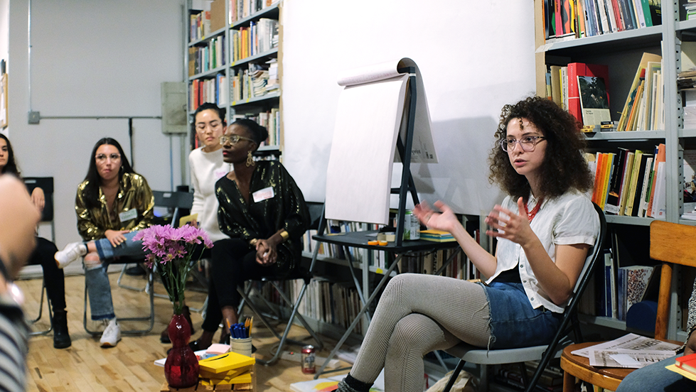
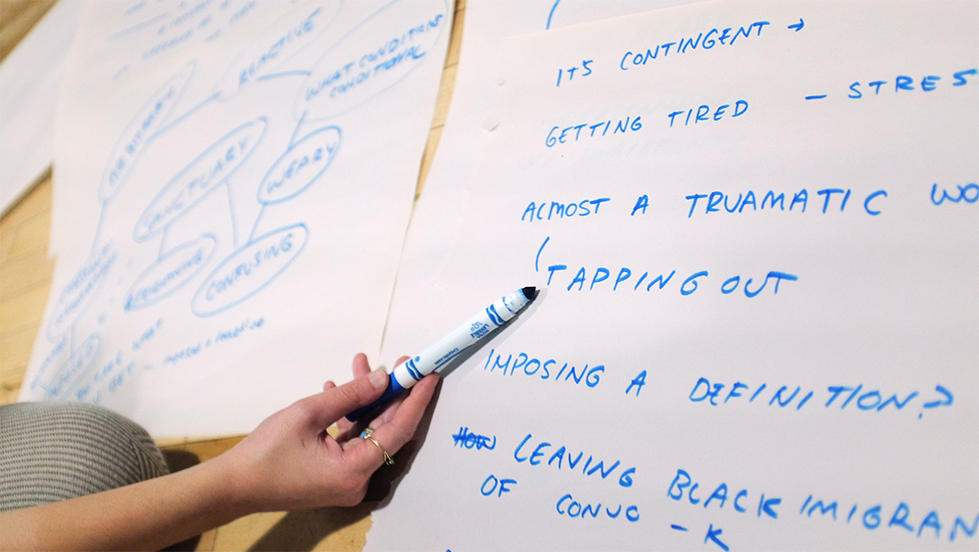
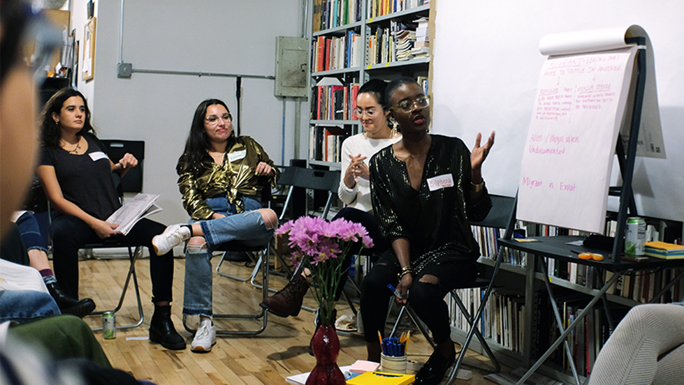

Manifesto-Building Workshop: Baltimore, MD @ Press Press's storefront studio [p. 286-297]
This workshop was facilitated by Samiha Alam, Valentina Cabezas, Kimi Hanauer, Bomin Jeon, and Bilphena Yahwon.
Images by Luz Maria Orozco.
This manifesto emerges as the targeting of immigrant communities and the violation of human rights continue: the likely ending of Deferred Action for Childhood Arrivals (DACA), the refugee crisis across the globe, mass deportations, and pervasive institutional misconduct. Within this context, the word “sanctuary” has a multiplicity of meanings. For undocumented immigrants, it might mean a sanctuary city, where authorities claim to not report on the legal status of its residents, or the simple right of not being forcefully removed from one’s home for arbitrary reasons. For refugee families, who undergo years of applications, travel, interviews, and extensive vetting, it might mean finally arriving at a place where physical safety seems more possible than it was before. And for many others, it might mean a place where alienation, institutional abuse, and physical harm are not daily threats because of one’s cultural or religious practices—a place where, instead, the practices of individuals and communities are seen as rich and admirable contributions to society. Through an interrogation of the notion of “sanctuary,” this manifesto affirms the expertise of immigrants and immigrant-adjacent persons in imagining and building sanctuary.
To cultivate the collaborative building of this manifesto, over the past year, Press Press has hosted a series of workshops in Baltimore, New York City, and Chicago. For each workshop, we invited local individuals who have a relationship to cultural passage, as well as members of our community in Baltimore, to gather over a dinner and have a discussion with the goal of answering three questions: What is sanctuary? How can sanctuary be created? How can sanctuary be protected? In order to answer these questions, we shared our own experiences around that term and attempted to unpack its various meanings. As our discussions unfolded, we added notes and ideas to our large manifesto board. These additions included only those things that the entire group agreed should be in the manifesto. However, there were certain cases where several opposing principles were included. This is because an essential element of sanctuary, according to the ideas this process has yielded, is its ability to morph and accommodate varying visions of its form and function, including sometimes contradictory ones. Later, we transformed our collection of notes from each workshop into the series of principles featured in the pages ahead. These principles incorporate the ideas we’ve gathered from every workshop.
Rather than seeing this collection of items as a concrete and final destination, we understand the process we’ve undertaken this past year as a point of departure. We recognize that some of the principles outlined here are not easily realizable, nor are they pragmatic. However, because of the collaborative process we’ve undertaken, we recognize this manifesto’s power in representing a collective vision we can reference as we make practical efforts toward accomplishing our goals. As you go through the collection of items in the manifesto, we invite you to consider if and how sanctuary has manifested in your life and within your community. We invite you to be part of our process and contribute to answering our questions, or asking new ones that we have yet to think through.
What is sanctuary? How can sanctuary be created? How can sanctuary be protected?
Thank you for joining our efforts.
With love,
Press Press
1. Sanctuary is not yet an experience—it is the horizon.
2. Sanctuary is safety, the actions you take to create safety, and a process toward healing. Sanctuary is protection.
3. We can protect sanctuary by actively asking what is really safe, and adjusting accordingly to the changes that happen around us.
4. Sanctuary is having basic human rights and being able to live with dignity.
5. Sanctuary is a strategy for navigating the oppressive structures we exist within, for checking authority, and matching the authority’s power.
6. Sanctuary relates to and affects policy. Sanctuary can be protected by law but it cannot be defined by it.
7. Sanctuary will be created through a reflexive process. Sanctuary exists in a moment; it is fleeting, fluctuating, amorphous, out of sight, and utopian by nature. Sanctuary is not rigid; it does not look like one thing.
8. Sanctuary is an intersectional constellation: It is multi-dimensional and in a constant flux. We can protect sanctuary by embracing non-binary identities.
9. Sanctuary has fluid borders that can change form depending on the context and needs at hand. We can protect sanctuary by actively acknowledging what we are coming up against and the limitations of what we are creating.
10. We come closer toward sanctuary by building a culture of allyship, understanding that others are part of who we are as individuals. We can protect sanctuary by considering the role of allies in this process.


11. We come closer to creating sanctuary when we abolish prisons.
12. Sanctuary will be directed by the people who need it.
13. We can protect sanctuary by keeping it discreet.
14. Sanctuary is different for different people. Whatever version of sanctuary we create needs to be malleable and accommodating of those different visions; many versions of sanctuary can coexist simultaneously.
15. Sanctuary is not something anyone can define for someone else. You can only define it for yourself.
16. We cannot step on someone else’s sanctuary to make our own sanctuary.
17. Sanctuary is not a physical space. It can be a moment, a feeling, or a state of being.
18. Sanctuary is inside of you. Finding your inner sanctuary has to do with recognizing your own power, privilege, and the role you can play in any situation. How do you carry sanctuary with you everywhere you go?
19. Sanctuary is an intentional community of people who respect and trust one another. That respect and trust will give rise to other collective opportunities.
20. Sanctuary will be created by you and your people: Who makes the cut?
21. Sanctuary comes out of uprising.
22. We can protect sanctuary by building solidarity, being accountable to one another and to the idea of sanctuary.
23. We can build sanctuary by listening to one another and to people who are outside of our communities.
24. We can protect sanctuary by actively and critically reviewing our work, acknowledging nuance, and practicing these skills.
25. Sanctuary comes out of reciprocal relations. Delegate labor: Figure out how you can be the most effective. We have different skills and are in different circumstances—everyone does what they can do.
26. Sanctuary comes from giving space to one another. Don’t assume we have the same priorities. We need to name our basic needs and then identify our roles.
27. We can protect sanctuary by letting go of our egos.
28. Protecting sanctuary means protecting people’s histories and collective memory.
29. Within our sanctuary, we will not recreate oppressive power structures and dynamics that we are working against.
30. We can protect and create sanctuary by loving others and practicing empathy.
Manifesto-Building Workshop: New York City, NY @ Wendy's Subway [p. 306-313]
This workshop was facilitated by Valentina Cabezas, Kimi Hanauer, Kearra Amaya Gopee, Bomin Jeon, and Bilphena Yahwon.
Images by Yunique A. Saafir.
31. Sanctuary is being part of a culture that does not push assimilation, but rather embraces and accommodates for our differences.
32. Sanctuary is contingent; it is an infinite Venn diagram.
33. We can protect sanctuary by actively working to maintain it.
34. We will build sanctuary through a global network of communication and support.
35. We can protect sanctuary by acknowledging that not everyone is capable of empathy and by accepting people for who they are.


36. Sanctuary is sacred. Sanctuary is vulnerable. Sanctuary is feeling seen and acknowledged.
37. Sanctuary can be defined by how we create and protect it. The process of creating sanctuary can be a sanctuary in itself.
38. We can protect sanctuary by creating a pluralistic social contract of values and ideas to which we all agree. We can protect sanctuary by sharing responsibility to sustain the things we value.
Download our Manifesto poster here.